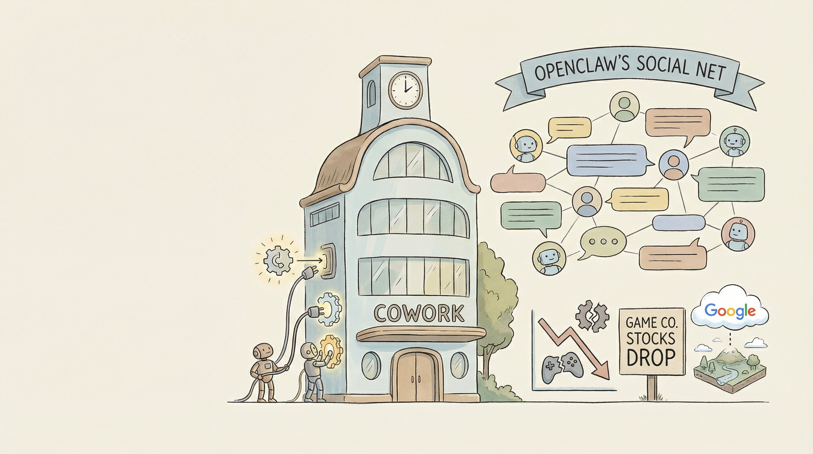

OpenClaw AI代理引发网络安全专家担忧，中国执行11起诈骗案件，4000万美元加密货币盗窃案有意外嫌疑人。
两克伴AIGC日报
2026-01-31 星期六

本期关注：开源AI代理Afelyon实现Jira工单转GitHub PR自动化，Moltbook打造首个AI代理社交网络，通用推理模型URMs在ARC-AGI基准测试取得突破，推动AI协作、社交与推理能力升级。
📰 行业动态
🔥 今日焦点
Afelyon是一款开源的AI代理，旨在解决团队协作中的关键瓶颈——从“创建工单”到“准备代码审查的PR”之间的差距。该AI代理能够读取Jira或ClickUp工单，克隆代码库，理解代码库的规范、模式和框架，自动生成代码，运行测试，并开启PR。经过数月的内部使用，Afelyon今日正式开源，涵盖API服务器、AI代理引擎、作业编排器和网络仪表板等全平台功能。
这一创新对AI领域具有重要意义。首先，Afelyon通过自动化流程，显著提高了软件开发和协作的效率，减少了人工干预，降低了错误率。其次，它展示了AI在代码生成和自动化测试方面的潜力，为AI在软件开发领域的应用提供了新的思路。最后，开源平台的建设，有助于推动AI技术的普及和交流，促进整个行业的进步。
《Universal Reasoning Model：一切你需要了解的》一文，由Dr. Ashish Bamania撰写，深入探讨了通用推理模型（URMs）的概念、工作原理及其在ARC-AGI基准测试中取得突破性成果的奥秘。URMs作为一种创新的AI模型，以其简洁的架构实现了卓越的性能，引发了业界的广泛关注。
文章首先概述了URMs的核心内容，揭示了其如何通过整合多种推理机制，实现对复杂问题的有效解决。接着，详细解析了URMs的工作原理，包括模型结构、训练过程以及如何优化推理能力。特别值得一提的是，URMs在ARC-AGI基准测试中取得了令人瞩目的成绩，这得益于其独特的架构设计。
📚 深度长文
本文由Matt Webb撰写，探讨了如何通过集体行动改善社区环境。文章以一群人共同制作和安装隼巢箱为例，阐述了“集体效能”的概念，即通过共同行动，每个人都能为社区带来积极影响。文章强调，无论是通过申请补贴资金，还是推动立法保护隼类栖息地，集体行动的力量不容小觑。
文章还以一位成功软件公司创始人利用公司收益回馈社会的故事为例，进一步阐述了“你可以仅仅通过行动”的理念。这位创始人通过实际行动，将成功转化为对社会的贡献，为更多人创造价值。
🛠️ 产品推荐
Gwt是一款创新的终端AI会话工具，旨在解决多任务并行工作时文件冲突和操作繁琐的问题。通过Gwt，用户可以轻松创建独立的AI会话，在多个特性间进行隔离工作，避免文件冲突。相较于传统方式，Gwt简化了Git工作树的管理和AI助手的启动过程，降低了操作难度，提高了工作效率。该产品适用于技术从业者，尤其适合在复杂项目中并行处理多个任务。
---
Show HN: Oyster Bot是一款基于 Claude Code的AI助手，专为手机用户设计。该产品通过Telegram bot形式，实现与 Claude CLI的交互，无需额外基础设施。Oyster Bot支持Claude Pro/Max版本，无需API key，用户可自定义权限、工具访问限制和插件命令。该产品采用约400行JavaScript编写，轻巧高效。Oyster Bot旨在为用户提供便捷的AI助手体验，解决日常沟通、任务处理等问题，助力技术从业者提升工作效率。
---
EditorWatch是一款针对计算机编程课程设计的AI辅助工具。该工具通过VS Code插件，实时监控学生的编码过程，分析其编程模式，如代码突然出现、缺乏自然试错、机械式打字等异常行为，从而帮助教师识别AI生成的代码，有效应对学生利用AI作弊的问题。与传统的仅检查最终代码的抄袭检测器不同，EditorWatch关注编码过程本身，为CS教师提供更全面的检测手段，保障编程教育的公平性和真实性。